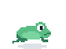

Damin OhAI for Security와 Security for AI에 관심을 가지고 있는 사이버보안 전공생입니다. malware analysis, LLM vulnerability detection, LLM red teaming을 함께 다루며, 최근에는 LLM Judge의 신뢰성과 편향을 평가하는 연구에도 관심을 두고 있습니다. 연구 주제를 스스로 정의하고, 직접 구현한 실험을 재현하며 결과를 검증하는 과정에 큰 흥미와 열정을 가지고 있습니다.
진행한 연구와 프로젝트
PIVOT
Prompt Injection 탐지 성능 평가를 위한 LLM 취약점 스캐너 벤치마킹 프레임워크LLM 취약점 스캐너가 Prompt Injection을 얼만큼 잡아내는지를 같은 조건에서 비교하는 벤치마킹 프레임워크를 만들었다.
변형 프롬프트 생성기(mutation engine)와 정답 기준 기반 평가기를 분리해 구현했고, 위험 응답 150건과 안전 응답 50건에서 Garak과 PyRIT을 비교했다. 전체 실험 설계, 평가 파이프라인, 데이터셋 구성을 맡았다.
SApp 학부 연구 인턴
PIVOT에서 확인한 한계와 거기서 나온 연구 질문에 답하는 Prompt Injection 연구를 이어 가고 있다.
입력 수준의 정답과 결과 수준의 정답을 분리해 1,560건 규모의 데이터셋을 구성했고, Target LLM 3종에서 응답 14,040건을 수집했다. 문제 인식부터 설계, 구현, 실험, 평가까지 직접 수행했다.
Malware Detection Workbench
악성코드 분석에서 얻은 증거를 탐지 룰로 연결하고 반복 검증하는 Detection-as-Code 플랫폼을 만들고 있다.
증거에서 탐지 가설을 세워 YARA·Sigma 룰로 쓰고, 악성·정상 데이터에서 TP/FP/FN을 집계해 룰을 고치는 흐름을 구현했다. 로컬 UI와 보고서 생성, AI 보조 소견 제안도 붙였다.
활동 기록
- 2022.03이화여자대학교 사이버보안전공 입학
- 2022.09 – 2023.06이화여자대학교 정보보안동아리 E-COPS (네트워크 보안, 웹 해킹, 포렌식)
- 2025.09 – 2026.06이화여자대학교 정보보안동아리 EVI$ION (리버싱, 악성코드 분석)
- 2026.05‘PIVOT: Prompt Injection 탐지 성능 평가를 위한 LLM 취약점 스캐너 벤치마킹 프레임워크’, 한국정보처리학회 ASK 2026 학부생 논문 경진대회 동상
- 2026.07 – 현재이화여자대학교 Security and Application Laboratory 학부 연구 인턴 (Prompt Injection, LLM Judge, LLM Vulnerability)
- 2026.09 – 현재Malware Detection Workbench 개인 프로젝트 (구현 진행 중)
- 2027.03이화여자대학교 사이버보안전공 졸업 (예정)
연락
이메일 2003damin@naver.com · GitHub ODamDam · Velog damdam03
Velog에서 ‘Weekly Security News’를 연재하고 있습니다.